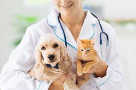

A Clínica Veterinária DogDodói é mais do que um espaço de atendimento médico para animais de estimação;
é um lugar onde o amor, o cuidado e a dedicação se encontram para proporcionar saúde e bem-estar aos nossos amigos de quatro patas.
Localizada no coração da cidade, nossa clínica é equipada com tecnologia de ponta e uma equipe de profissionais altamente qualificados,
prontos para oferecer um atendimento personalizado e humanizado.
Na DogDodói, entendemos que cada pet é único e merece um tratamento especial, por isso, estamos comprometidos em proporcionar um ambiente acolhedor e seguro,
garantindo que seu companheiro receba o melhor cuidado possível. Seja para consultas de rotina, emergências ou tratamentos especializados, estamos aqui para
cuidar de quem é tão importante para você. Bem-vindo à DogDodói, onde a saúde do seu pet é a nossa prioridade!
Na Clínica Veterinária DogDodói, oferecemos uma ampla gama de serviços para atender todas as necessidades do seu pet com excelência e dedicação.
Nosso objetivo é garantir que seu companheiro receba o melhor cuidado possível em todas as fases da vida. Conheça nossos principais serviços:
- Consultas de Rotina e Preventivas: Realizamos check-ups regulares para monitorar a saúde do seu pet, prevenindo doenças e garantindo bem-estar contínuo.
- Vacinação: Mantemos o calendário de vacinação atualizado para proteger seu animal contra diversas doenças.
- Emergências e Atendimento 24 Horas: Nossa equipe está preparada para atender emergências a qualquer hora do dia ou da noite, oferecendo suporte imediato em situações críticas.
- Exames Diagnósticos: Disponibilizamos uma variedade de exames laboratoriais, de imagem (como raio-X e ultrassonografia), e outros procedimentos diagnósticos para uma avaliação precisa da saúde do seu pet.
- Cirurgias: Realizamos procedimentos cirúrgicos de diferentes complexidades, desde esterilizações até cirurgias ortopédicas e de tecidos moles, com toda a segurança e cuidado necessários.
- Odontologia Veterinária: Cuidamos da saúde bucal do seu pet, realizando limpezas dentais, extrações e tratamentos para doenças periodontais.
- Nutrição e Dietética: Oferecemos orientação nutricional personalizada para garantir uma alimentação equilibrada e adequada às necessidades específicas do seu animal.
- Fisioterapia e Reabilitação: Disponibilizamos tratamentos de fisioterapia para auxiliar na recuperação de lesões, cirurgias e problemas de mobilidade.
- Dermatologia: Tratamos doenças de pele e pelagem, garantindo que seu pet tenha uma pele saudável e livre de desconfortos.
- Internação: Contamos com instalações confortáveis e monitoramento constante para pets que necessitam de cuidados intensivos ou recuperação pós-operatória.
- Tosa e Higiene: Serviços de banho, tosa e higiene para manter seu pet limpo, bonito e saudável.
- Orientação Comportamental: Auxiliamos na resolução de problemas comportamentais, proporcionando uma convivência mais harmoniosa entre você e seu pet.